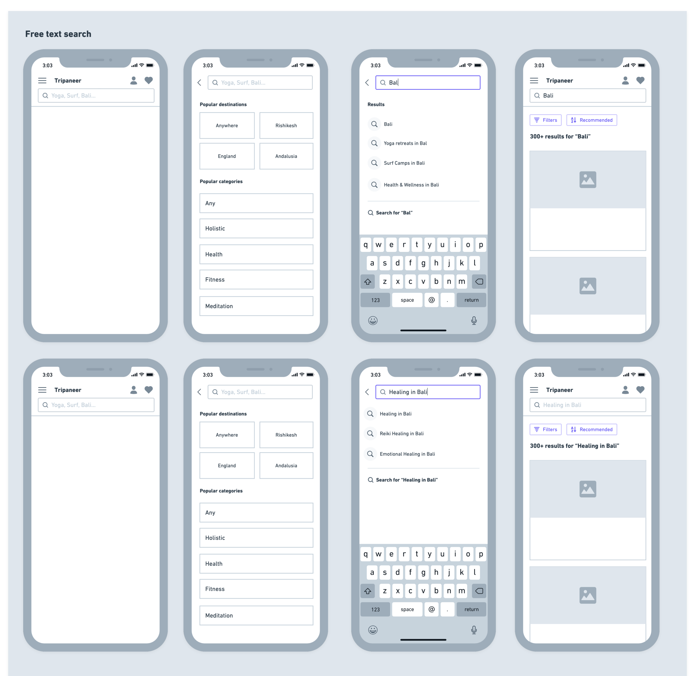
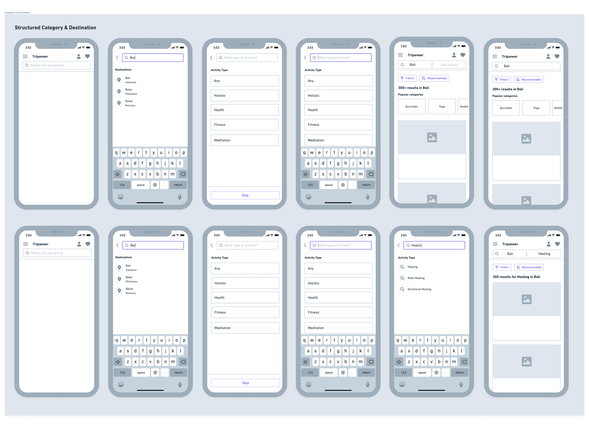
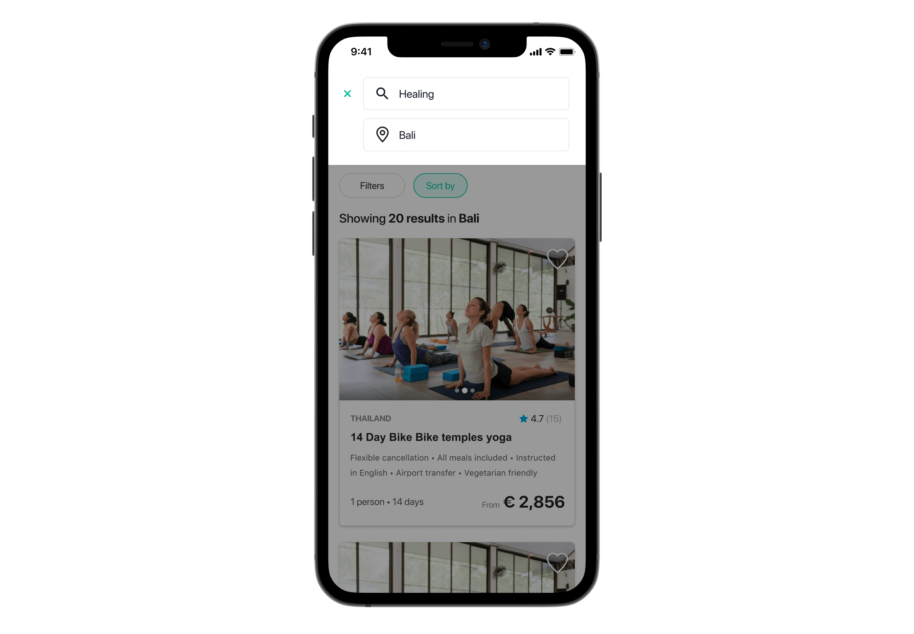
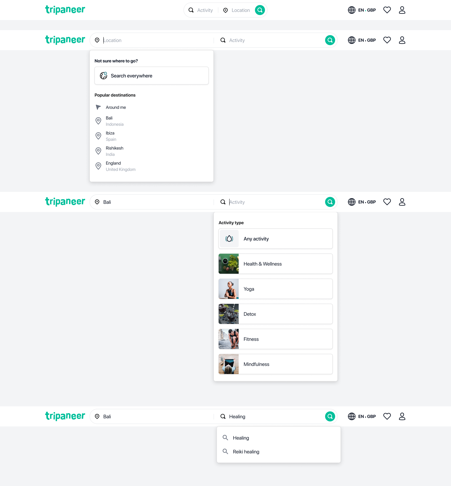
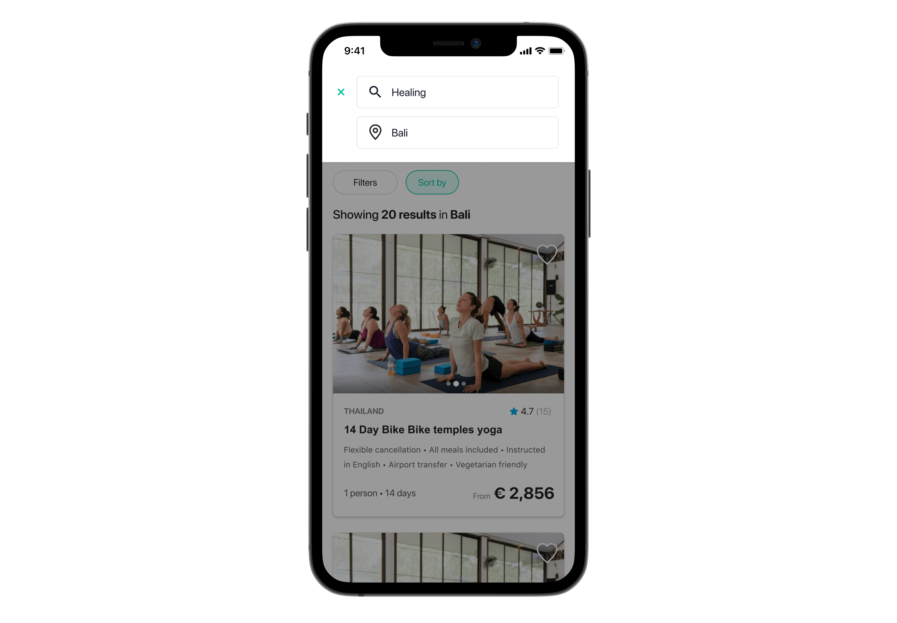
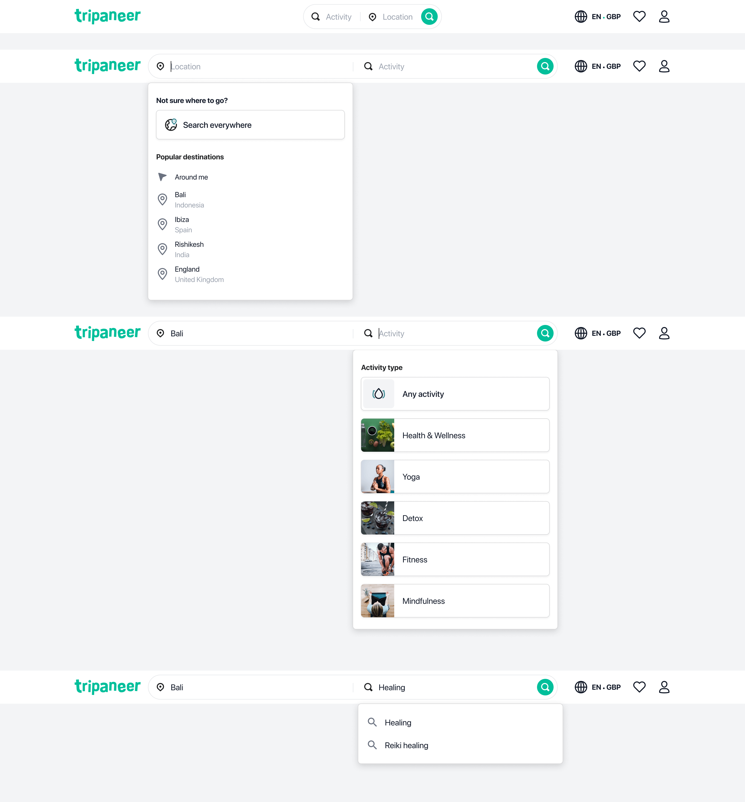

Consolidating different search experiences
How we collaborated as a team to create a user friendly, consistent search experience.
The challenge
We have 3 different types of search across Tripaneer & our 14 category websites, with different combinations on different sites:
-
Search by destination
-
Search by 'category' (Yoga, Detox, etc)
-
Search by arrival date
We know that user's that search have a higher inquiry conversion rate, which suggests that, if they can find the search bar, they can find retreats that they're interested in.
However, search is only accessible at certain points of the journey, could we create a universal search across the entire journey?
The outcome
See what we built, before viewing the process as to how we got there:
The process
The data
-
70% of users searching for destination
-
18% of users searching for ‘category’ (i.e Yoga)
-
10% searching for a Yoga style
-
1% searching for online retreats
Goals
- Increase conversion rate through improving the search experience
- Consolidate all variants of search to create a singular experience for users
Discovery
We spent time as a team to digest the research & challenge set, and to workshop potential problem areas to solve.
First we analysed the current flow, the data points & created 'how might we' sticky notes, which were then themed and voted upon.
After this, the themes were categorised & split into priority & impact.
High priority themes
- How might we improve the way search matches the search query? Ie:
- Yoga India
- Never allow users to have zero results or give recommendations & options when there are zero/low number of results
- How might we allow users to search via listing title & by organizer name?
- How might we power the search via tagging?
- Free text search
- How might we handle edge cases of search? i.e:
-
Destination acronyms (UK, USA)
-
Handle multiple languages
-
Typos
- How might we have a consistent search experience across the entire website?
- How might we combine the 3 different search options into one search flow? (i.e free text, dates, activity)
- How might we allow users to search across the entire website?
Low fidelity wireframes
Taking the data, how might we priorities & competitor analysis, we took two types of flow to test and discuss with the team:
-
Version 1: Free text single search
-
Version 2: Structured destination & category search



 


